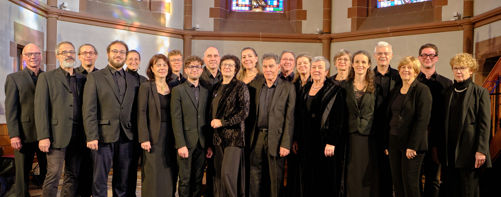
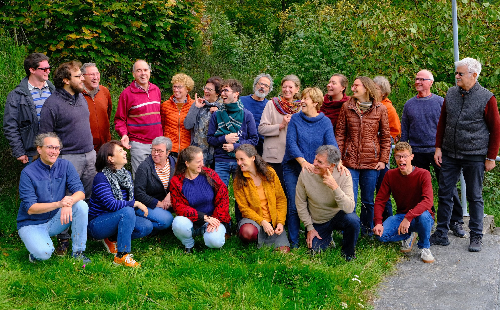
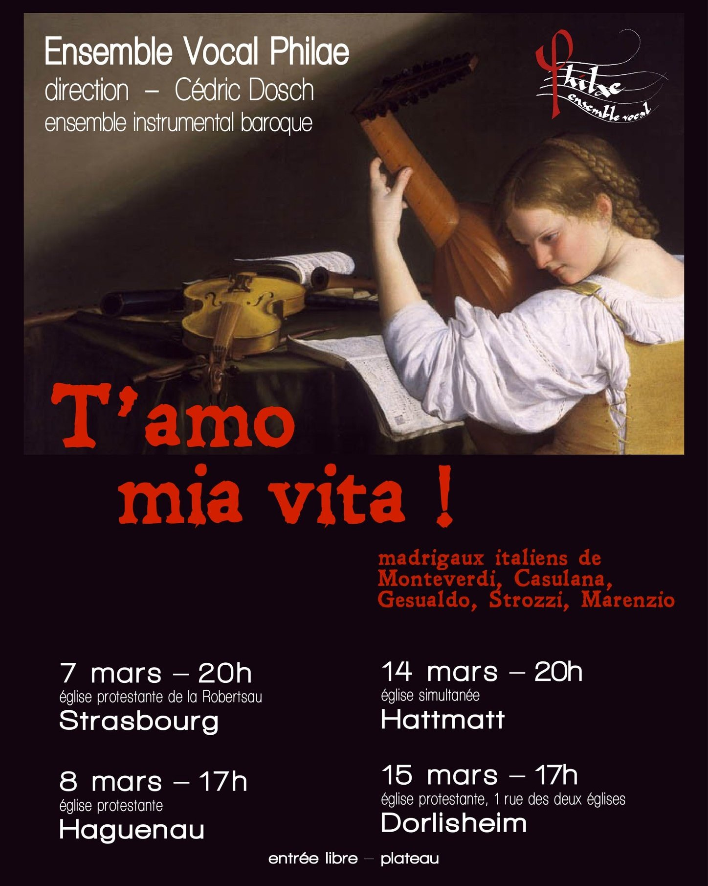

T'amo, mia vita, la mia cara vita
« Je t'aime, ma vie », ma chère vie
Dolcemente mi dice, e 'n questa sola
Doucement me dit, et par cette seule
Sí soave parola
Parole si douce
Par che trasformi lietamente il core,
Elle transforme joyeusement son cœur
Per farmene signore.
Pour m'en faire le maître.
O voce di dolcezza, e di diletto!
Ô voix de douceur et de plaisir !
Prendila tosto, Amore;
Prends-la de suite, Amour ;
Stampala nel mio petto.
Imprime-la dans mon cœur.
Spiri dunque per lei l'anima mia;
Que mon âme respire donc pour elle ;
T'amo, mia vita, la mia vita sia.
Que « Je t'aime, ma vie » soit ma vie
Ridon' hor per le piaggie herbett'e fiori,
Je vais errant parmi les prairies d'herbes et de fleurs,
Esser non puo che quel angelic' alma,
Il ne peut être que cette âme angélique
Non sent' il suon del' amorose note,
N'entende pas le son des notes amoureuses.
Se nostra ria fortun' è di piu forza,
Si notre funeste fortune est la plus forte,
Lagrimand' e cantando i nostri versi,
Pleurant et chantant nos vers,
E col bue zopp' andrem cacciando l'aura.
Avec le bœuf boiteux nous irons chassant le vent.
Morir non puo il mio cuore,
Mon cœur ne peut pas mourir,
Uccider lo vorrei,
Je voudrais le tuer
Poi che vi piace
Puisque cela vous rendrait heureux
Ma trar no si puo fuore
Mais rien ne peut l'arracher
Del petto vostr'ove gran tempo giace.
De ce sein où si longtemps il fut couché.
Et uccidendol'io, come desio,
En le faisant mourir comme je le désire,
So che moreste voi, morend'anch'io
Je sais que vous mourrez et je mourrai aussi.
Basciami mille volte
Embrasse-moi mille fois,
Con quelle dolci tue labra rosate
Avec tes douces lèvres roses,
Piene di vaghe voglie innamorate.
Pleines d'adorables désirs amoureux.
E se l'alma mia presa
Et si mon âme, prise
D'insolita dolcezza verrà meno,
D'une douceur insolite, s'évanouit,
Stringemi stringemi tosto al delicato seno.
Serre-moi, serre-moi vite contre ton sein délicat.
Ma s'avvien poi ch'io mora,
Mais s'il arrive que je meure,
Dolce la sorte fia, dolce la stella,
Doux soit le destin, douce l'étoile,
Che morte mi darà si dolc'e bella.
Qui me donnera une mort si douce et si belle.
Solo e pensoso i più deserti campi
Seul et pensif, je vais arpentant les campagnes les plus désertes,
Vo mesurando a passi tardi e lenti;
A pas tardifs et lents ;
E gli occhi porto per fuggire intenti
Et mes yeux sont uniquement préoccupés de rechercher, pour les fuir,
Ove vestigio uman l'arena stampi.
Les lieux où le sable porte l'empreinte de traces humaines.
Altro schermo non trovo che mi scampi
Je ne trouve pas d'autre défense pour éviter
Dal manifesto accorger de le genti;
Que les gens ne s'aperçoivent de mon état ;
Perchè negli atti d'allegrezza spenti
Car dans l'air joyeux que j'affiche au dehors,
Di fuor si legge com'io dentro avampi.
On lit combien je brûle au dedans.
Itene a volo, o miei sospiri ardenti,
Envolez-vous, ô mes soupirs ardents :
Portate il dolor mio
Portez ma douleur
Al tanto sospirato mio desio
À mon désir tant soupiré.
Dite ch'a pena in tante pene i'spiro
Dites que je respire à peine dans tant de peines,
Che sol per lui respiro ;
Que c'est pour lui seul que je respire ;
Dite ch'in cosi dura lontananza
Dites que dans une si dure distance,
Di memoria sol vivo, e di speranza
Je ne vis que de mémoire et d'espoir.
Moro, lasso, al mio duolo
Je meurs, hélas, de ma douleur,
E chi mi può dar vita,
Et qui pourrait me donner la vie,
Ahi, che m'ancide e non vuol darmi aita !
Las ! Me tue et ne veut pas me secourir !
O dolorosa sorte,
Ô destin cruel,
Chi dar vita mi può, ahi, mi dà morte
Qui pourrait me donner la vie, las, me donne la mort.
Ahi, tu piangi, mia vita!
Ah, tu pleures, ma vie !
Tu piangi e piang'anch'io,
Tu pleures et je pleure moi aussi,
Ch'egli è quel che tu vers'il pianto mio.
Car elles sont miennes ces larmes que tu répands.
Sfogava con le stelle
Se confiant aux étoiles,
Un'infermo d'Amore
Un malade d'amour,
Sotto notturno ciel il suo dolore,
Sous le ciel nocturne, exprimait sa douleur,
E dicea fisso in loro:
Et il disait en les regardant :
O imagini belle del'idol mio ch'adoro
Ô belles images de l'idole que j'adore,
Si com'a me mostrate,
Comme vous me montrez,
Mentre cosi splendete,
Quand vous brillez,
La sua rara beltate
Sa rare beauté,
Cosi mostrast'a lei
De même montrez-lui
I vivi ardori miei
Mes vives ardeurs.
La fareste col vostr'aureo sembiante
Vous la ferez avec votre apparence auréolée
Pietosa si come me fat'amante.
Compatissante comme vous m'avez fait amoureux.
Zefiro torna, e'l bel tempo rimena,
Zéphir revient, il ramène le beau temps,
E i fiori e l'erbe, sua dolce famiglia,
Et les fleurs et les herbes, sa douce famille ;
E garrir Progne, e pianger Filomena,
Et les gazouillements de Progné, et les plaintes de Philomèle,
E primavera candida e vermiglia.
et le printemps candide et vermeil.
Ridono i prati, e'l ciel si rasserena;
Les prés rient et le ciel se rassérène ;
Giove s'allegra di mirar sua figlia;
Jupiter se réjouit de voir sa fille ;
L'aria, e l'acqua, e la terra è d'amor piena;
L'air et l'eau, et la terre, tout est plein d'amour ;
Ogni animal d'amar si riconsiglia.
Tous les animaux se remettent à aimer.
Ma per me, lasso!, tornano i più gravi
Mais pour moi, hélas ! reviennent plus pesants
Sospiri, che del cor profondo tragge
Les soupirs que tire du tréfonds de mon cœur
Quella ch'al ciel se ne portò le chiavi;
Celle qui en emporta les clefs au ciel.
E cantar augelletti, e fiorir piagge,
Et les petits oiseaux qui chantent, et les coteaux qui fleurissent,
E'n belle donne oneste atti soavi
Et les belles dames honnêtes au suave maintien,
Sono un deserto, e fere aspre e selvagge.
Sont un désert et des bêtes cruelles et sauvages.
Non havea Febo ancora
Phébus n'avait pas apporté
Recato al mondo il dí,
Le jour au monde
Ch'una donzella fuora
Qu'une demoiselle sortit
Del proprio albergo uscí.
De sa demeure.
Sul pallidetto volto
Sur son visage pâle
Scorgeasi il suo dolor,
Se montrait sa douleur,
Spesso gli venia sciolto
De son cœur souvent sortait
Un gran sospir dal cor.
Un profond soupir
Sí calpestando fiori
Ainsi piétinant les fleurs,
Errava hor qua, hor là,
Elle errait de ci, de là,
I suoi perduti amori
Sur ses amours perdus
Cosí piangendo va:
Pleurant ainsi :
"Amor", dicea, il ciel
« Amour », disait-elle, regardant
Mirando, il piè fermo,
Le ciel, le pied ferme,
"dove, dov'è la fè
« Où est la foi
Ch'el traditor giurò?"
Que le traître m'a jurée ? »
Miserella.
Pauvre d'elle !
"Fa' che ritorni il mio
« Fais que revienne mon
Amor com'ei pur fu,
Amour comme il faisait avant,
O tu m'ancidi, ch'io
Ou tue-moi, que je
Non mi tormenti più."
Ne me tourmente plus. »
Miserella, ah più no, no,
Pauvre d'elle, ah, elle ne peut plus,
Tanto gel soffrir non può.
Plus, supporter une telle froideur.
Non vo' più ch'ei sospiri
Je ne veux plus qu'il soupire
Se non lontan da me,
S'il n'est loin de moi,
No, no che i suoi martiri
Non, non, ces souffrances
Più non dirammi affè.
Il ne me les infligera plus, je le jure.
Perché di lui mi struggo,
Parce que je languis de lui,
Tutt'orgoglioso sta,
Il est plein d'orgueil,
Che si, che si se'l fuggo
Mais si je fuis loin de lui,
Ancor mi pregherà?
Il me suppliera à nouveau ?
Se ciglio ha più sereno
Si ses cils sont plus sereins
Colei, che'l mio non è,
Que ne le sont les miens,
Già non rinchiude in seno,
Il n'a pas en son sein,
Amor, sí bella fè.
Amour, ni une aussi belle foi.
Ne mai sí dolci baci
Plus jamais il ne recevra
Da quella bocca havrai,
De si doux baisers de cette bouche,
Ne più soavi, ah taci,
Ni de plus doux. Ah, tais-toi,
Taci, che troppo il sai."
Tais-toi, il le sait trop.
Sí tra sdegnosi pianti
Ainsi à travers ses larmes dédaignées,
Spargea le voci al ciel;
S'élevaient ses cris vers le ciel ;
Cosí ne' cori amanti
Ainsi dans le cœur des amants
Mesce amor fiamma, e gel.
L'amour mêle le feu et la glace.
Chiome d'oro,
Chevelure d'or,
Bel tesoro,
Beau trésor,
Tu mi leghi in mille modi
Tu me lies de mille façons,
Se t'annodi,
Que tu sois nouée
Se ti snodi.
Ou dénouée.
Candidette
Nobles perles,
Perle elette,
Toutes transparentes,
Se le rose che coprite
Quand les roses qui vous cachent
Discoprite,
Vous révèlent,
Mi ferite.
Vous me blessez.
Vive stelle
Étoiles vivantes
Che sì belle
Qui resplendissez
E sì vaghe risplendete,
Si belles et si gracieuses,
Se ridete
Quand vous riez
M'ancidete.
Vous me torturez.
Preziose,
Précieuses,
Amorose,
Amoureuses,
Coralline labbra amate,
Lèvres de corail que j'aime,
Se parlate
Quand vous parlez,
Mi beate.
Vous me bénissez.
O bel nodo
Ô beaux nœuds
Per cui godo!
Par qui je me délecte !
O soave uscir di vita!
Ô douce sortie de la vie !
O gradita mia ferita!
Ô agréable blessure !
Dolcissimi respiri de' nostri cori amanti
Les plus doux soupirs de nos cœurs amoureux
Son le parole affettuose e i canti.
Sont les mots affectueux et les chants.
Sfoga, o mio core, il tuo cocente ardore,
Exprime, ô mon cœur, ton ardeur brûlante,
Se tal'hor non ti tocca
Quand parfois tu ne peux pas
Nodrirti almen di due soavi baci.
Au moins te nourrir de deux doux baisers.
Afflittissima bocca,
Bouche affligée,
Stolta sei se tu taci:
Tu es folle si tu te tais :
Parla, canta, respira, esala il duolo,
Parle, chante, respire, expire ta douleur,
Canta, canta, che solo
Chante, chante, car seuls
Dolcissimi respiri de nostri cori Amanti
Les plus doux soupirs de nos cœurs amoureux
Son le parole affettuose ei canti
Sont les mots affectueux et les chants
Chi di noi voglia più,
Qui de nos sens vaut le plus,
E di gioia maggior ministro sia,
Qui commande les joies les plus grandes ?
Fiera lite ognor fu.
Quelle furieuse dispute ce fut.
Io miro, io sento, io gusto, io fiuto, io tocco,
Je regarde, je sens, je goûte, je renifle, je touche,
E nella donna mia
Et chez ma femme
Tal'hor, anco mercé d'un picciol bacio,
Grâce aussi à un petit baiser,
Tutto trabocco.
Tout déborde.
Tocca pur quanto sai,
Touchez donc autant que vous savez,
Che nel sol tocco Amore
Car dans le seul contact, Amour
Il verace gioir non pose mai.
N'a jamais placé la véritable joie.
Ne sia giudice il cor mesto e languente;
Que soit juge le cœur triste et languissant ;
"Ohimè" senti ch'il cor dentro ci dice,
"Hélas," sens ce que le cœur nous dit,
Ch'un sol bacio, ch'è niente, il fa felice.
Qu'un seul baiser, ce petit rien, le rend heureux.
Hor che 'l ciel e la terra e 'l vento tace,
A présent que le ciel la terre et le vent se sont tus
E le fere e gli augelli il sonno affrena,
Que le sommeil retient les fauves et les oiseaux
Notte il carro stellato in giro mena
Que la nuit mène en ronde son char étoilé
E nel suo letto il mar senz'onda giace;
Et que dans son lit repose la mer calme
Veglio, penso, ardo, piango; e chi mi sface
Je veille, je pense, je brûle ; qui me tue est
Sempre m'è inanzi per mia dolce pena:
Toujours devant moi pour ma douce peine :
Guerra è il mio stato, d'ira et di duol piena;
La guerre est mon état, pleine de douleur et de colère
E sol di lei pensando ho qualche pace.
et ce n'est qu'en pensant à elle que j'ai un peu de paix.
Così sol d'una chiara fonte viva
Ainsi seul dans une source unique, vive et claire
Move 'l dolce e l'amaro ond'io mi pasco;
Se trouvent la douceur et l'amertume dont je me repais.
Una man sola mi risana e punge.
C'est la même main qui me guérit et me blesse.
E perchè 'l mio martìr non giunga a riva,
Et comme mon martyre n'a pas de fin,
Mille volte il dì moro e mille nasco;
Mille fois le jour je meurs et mille fois je renais ;
Tanto da la salute mia son lunge!
Car de ma guérison je suis bien éloigné !
Beatus vir, qui timet Dominum:
Heureux l'homme qui craint le Seigneur :
In mandatis ejus rolet nimis.
En ses commandements, il trouve un grand plaisir.
Potens in terra erit semen ejus;
Sa lignée sera puissante sur la terre ;
Generatio rectorum benedicetur.
La race des justes sera bénie.
Gloria et divitiae in domo ejus;
Gloire et richesses sont dans sa maison ;
Et justitia ejus manet in saeculum saeculi.
Et sa justice demeure d'âge en âge.
Exortum est in tenebris lumen rectis.
Une lumière s'est levée dans les ténèbres pour les droits.
Misericors, et miserator et justus.
Miséricordieux, compatissant et juste.
Jucundus homo qui miseretur et commodat.
Heureux l'homme qui fait miséricorde et partage.
Disponet sermones suos in judicio:
Il mène ses affaires avec droiture :
Quia in aeternum non commovebitur.
Car il ne sera jamais ébranlé.
In memoria aeterna erit justus.
Le juste sera en mémoire éternelle.
Ab auditione mala non timebit.
Il n'a pas peur des mauvaises nouvelles.
Paratum cor ejus sperare in Domino;
Son cœur est ferme, il espère en le Seigneur ;
Confirmatum est, cor ejus:
Son cœur est confiant :
Non commovebitur,
Il ne sera pas ébranlé,
Donec despiciat inimicos suos.
Jusqu'à ce qu'il voit ses ennemis.
Dispersit, dedit pauperibus:
Il a répandu, donné aux pauvres :
Justitia ejus manet in saeculum saeculi,
Sa justice demeure d'âge en âge,
Cornu ejus exaltabitur in gloria.
Sa corne sera élevée dans la gloire.
Peccator videbit, et irascetur;
Le pécheur le verra et s'irritera ;
Dentibus suis fremet et tabescet.
Il grincera des dents et dépérira.
Desiderium peccatorum peribit.
L'ambition des pécheurs se perdra.

Anne, Claire, Clotilde, Myriam
Camille, Céline, Marilène
Cécile, Doris, Geneviève, Maria
Jean-Jacques, Léonard, Paul
Philippe, Thomas, Vincent
Jean, Martin, René, Thomas

Les choristes de Philae sont amateurs et nos concerts sont entièrement portés par le bénévolat. Vos dons permettent de financer notre chef de chœur et les instrumentistes professionnels, les lieux de concert, les partitions et le matériel.
Votre générosité fait vivre notre musique et rend ces projets possibles. Merci de tout cœur.
(Un reçu fiscal peut être délivré pour les dons ouvrant droit à déduction.)
